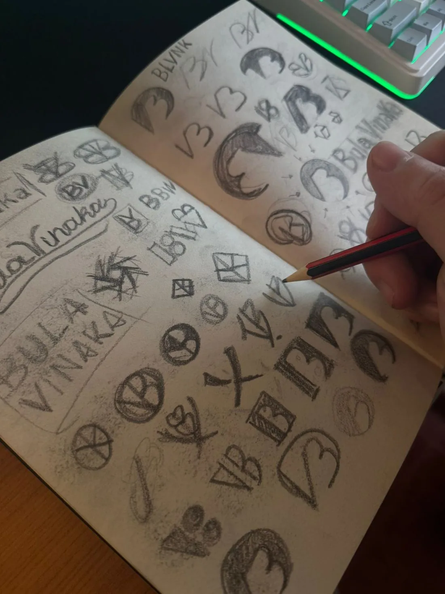
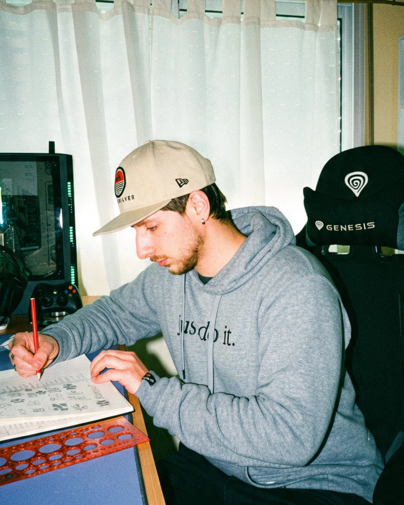
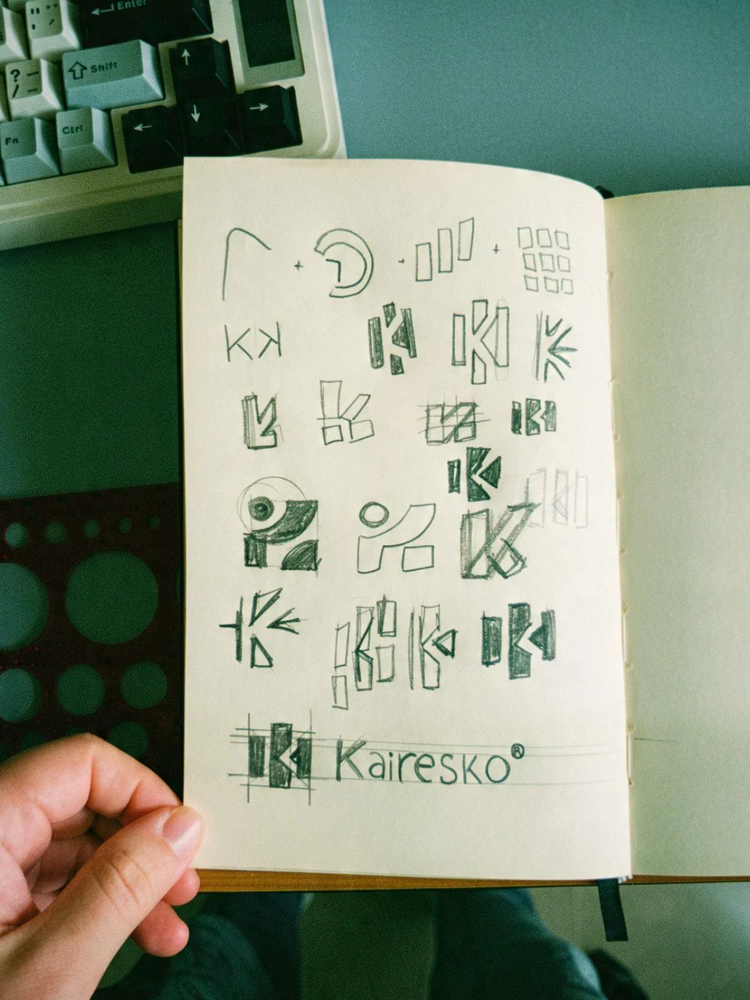
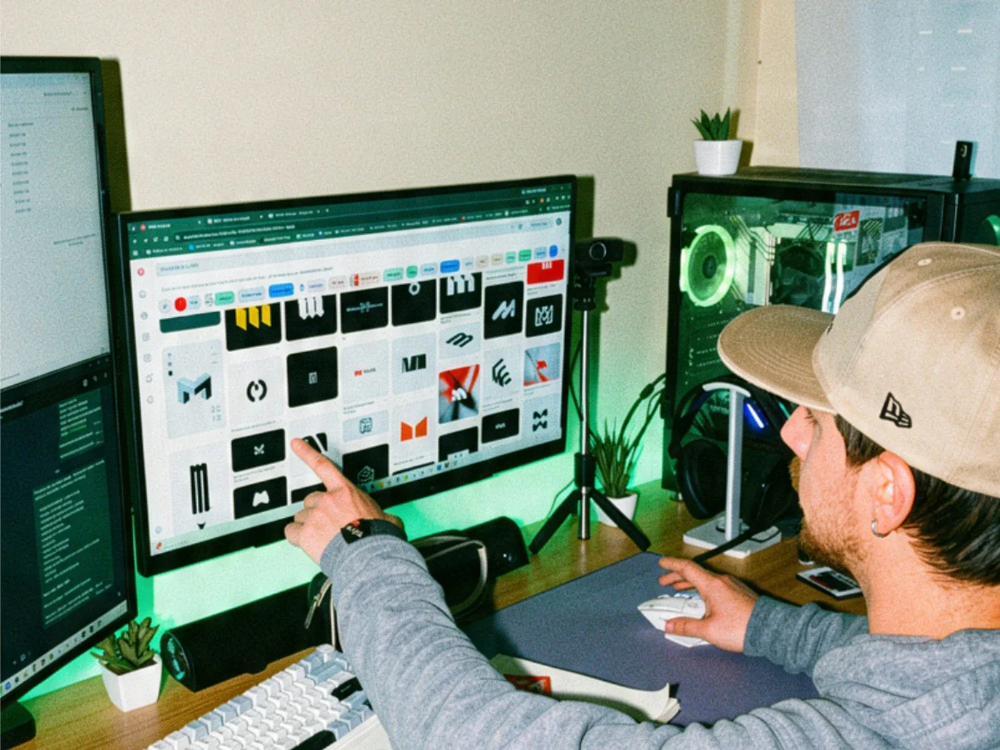
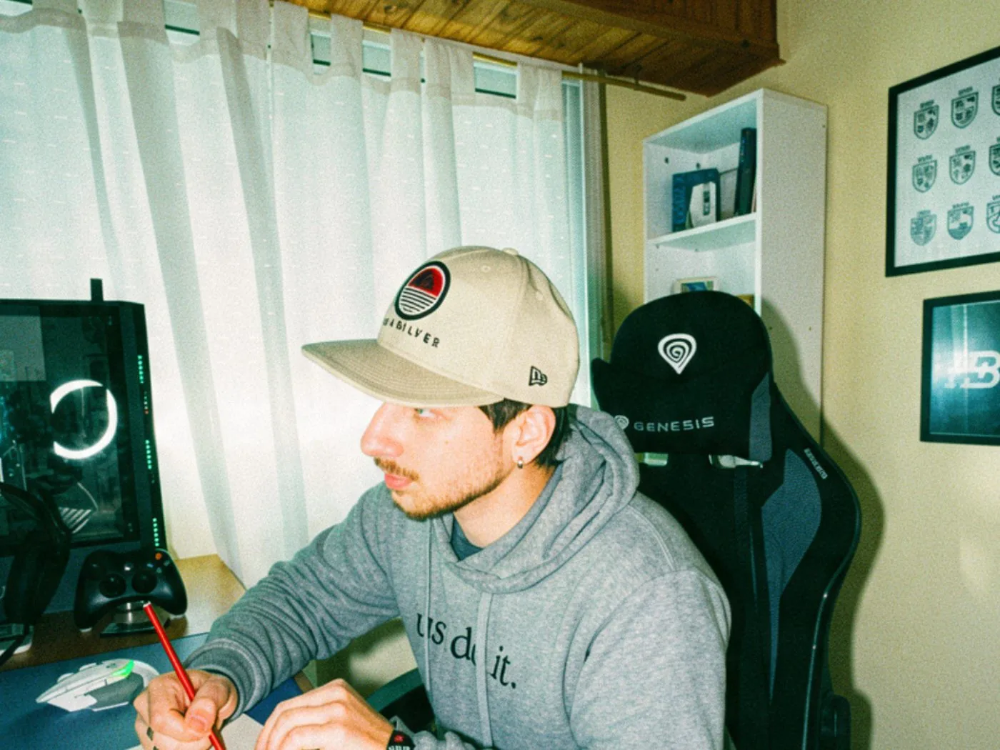

Brand identity & logo designer
Cada marca pasa por mis manos.
Soy Julián Orlando. Hablás conmigo de principio a fin, no con un account manager ni con un equipo rotativo. Por eso cada marca tiene una mirada consistente, no un collage de decisiones de distintas personas.
- Marcas construidas
- +40
- Años de trayectoria
- 6
- Países con clientes
- 6
- Mirada detrás de cada marca
- 1


Cómo trabajo
Marcas pensadas para durar más que la tendencia del año.
Diseño identidades visuales con un enfoque atemporal: marcas sólidas, pensadas para perdurar y mantenerse relevantes más allá de las modas del momento.
Cada decisión visual tiene una razón detrás. Si un color, una forma o una tipografía no le suma algo concreto a tu marca, no va.
Quiero que tu marca se vea tan bien como trabajás, y que la gente correcta la elija por eso.
Alcance
Desde Buenos Aires, para marcas de los dos lados del Atlántico.
Trabajo hace años con marcas locales e internacionales, llevando la misma mirada estratégica a cada país en el que aterrizo. El proceso es 100% remoto, sin diferencia de calidad ni de plazos.
- Argentina, base en Buenos Aires
- EspañaProyecto internacional
- MéxicoProyecto internacional
- GuatemalaProyecto internacional
- ChileProyecto internacional
- UruguayProyecto internacional

Trayectoria
Seis años construyendo una sola mirada.
De los primeros encargos como freelance al estudio de hoy: el mismo criterio, aplicado cada vez a más marcas y más países.
Ver los trabajos-
2019
Los primeros pasos
Arranco como diseñador freelance y aprendo a mirar cada marca como un problema a resolver, no como un dibujo que tiene que gustar.
-
2021
Cruzo la frontera
Llegan los primeros proyectos fuera de Argentina. España y Chile marcan el inicio del alcance internacional del estudio.
-
2023
Nace OrlandoStudio™
El freelance se vuelve estudio propio, enfocado exclusivamente en identidad visual y diseño de logotipos.
-
2026
+40 marcas después
Seis años, seis países y más de cuarenta marcas construidas. Sigo trabajando de a dos proyectos por mes para no bajar el nivel de dedicación.
Detrás de escena
El proceso, antes del archivo final.
Cada marca empieza en papel: lápiz, bocetos y horas de exploración antes de tocar la pantalla.



“Recordá que tu proyecto también es mi proyecto.”
Trabajemos juntos
Me comprometo a entender tu marca y cuidarla como si fuera mía.
Mi prioridad es que te sientas orgulloso cada vez que muestres tu marca.